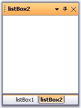

The Docking Manager's API makes it an easy task to programmatically create, initialize and set up a docking window's layout in an application. The following section guides you through the steps involved in setting up a simple docking windows layout with two Listbox controls.
1. Add the below namespace.
|
[C#]
//namespaces using Syncfusion.Windows.Forms.Tools; using Syncfusion.Windows.Forms; |
|
[VB.NET]
'namespaces Imports Syncfusion.Windows.Forms Imports Syncfusion.Windows.Forms.Tools |
2. Create and initialize the Docking Manager and two listbox controls.
|
[C#]
// Create the DockingManager instance and add it the component list. private Syncfusion.Windows.Forms.Tools.DockingManager dockingManager; private System.Windows.Forms.ListBox listBox1; private System.Windows.Forms.ListBox listBox2;
this.dockingManager = new Syncfusion.Windows.Forms.Tools.DockingManager(this.components); this.listBox1 = new System.Windows.Forms.ListBox(); this.listBox2 = new System.Windows.Forms.CheckedListBox(); |
|
[VB.NET]
' Create the DockingManager instance and add it the component list. Private Syncfusion.Windows.Forms.Tools.DockingManager dockingManager; Private System.Windows.Forms.ListBox listBox1; Private System.Windows.Forms.ListBox listBox2;
Me.dockingManager = New Syncfusion.Windows.Forms.Tools.DockingManager(Me.components) Me.dockingManager.BeginInit() Me.listBox1 = New System.Windows.Forms.ListBox() Me.listBox2 = New System.Windows.Forms.ListBox() |
3. Set some properties of the DockingManager. Ex VisualStyle to "Office2003".
|
[C#]
//Set the visual Style of the docked controls this.dockingManager.VisualStyle = Syncfusion.Windows.Forms.VisualStyle.Office2003; |
|
[VB.NET]
'Set the visual Style of the docked controls Me.dockingManager.VisualStyle = Syncfusion.Windows.Forms.VisualStyle.Office2003 |
4. Enable the controls to be docked by calling SetEnableDocking method.
|
[C#]
this.dockingManager.SetEnableDocking(this.listBox1,true); this.dockingManager.SetEnableDocking(this.listBox2,true); |
|
[VB.NET]
Me.dockingManager.SetEnableDocking(Me.listBox1,True) Me.dockingManager.SetEnableDocking(Me.listBox2,True) |
5. Docking styles for the controls can be specified in DockControl method. Here the docking style is set to tabbed.
|
[C#]
// Tab the docked controls this.dockingManager.DockControl(this.listBox1, this.listBox2,Syncfusion.Windows.Forms.Tools.DockingStyle.Tabbed,200,true); |
|
[VB.NET]
' Tab the docked controls Me.dockingManager.DockControl(Me.listBox1, Me.listBox2,Syncfusion.Windows.Forms.Tools.DockingStyle.Tabbed,200,True) |
The resulting form will look like the below image.

Figure 44: Tabbed Dockable Listbox Controls